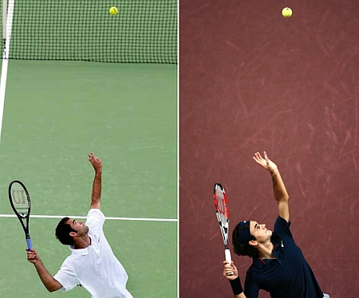
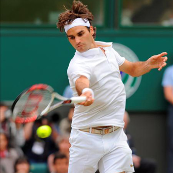
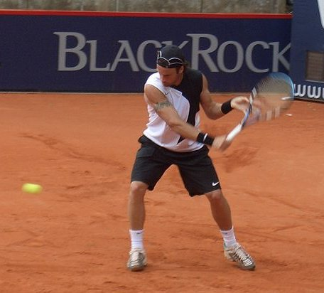
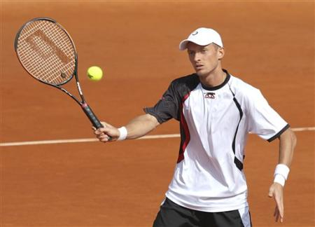
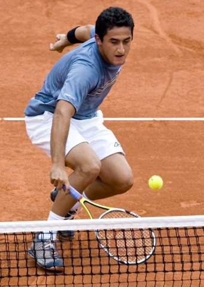
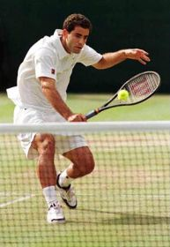
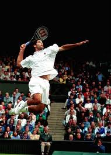
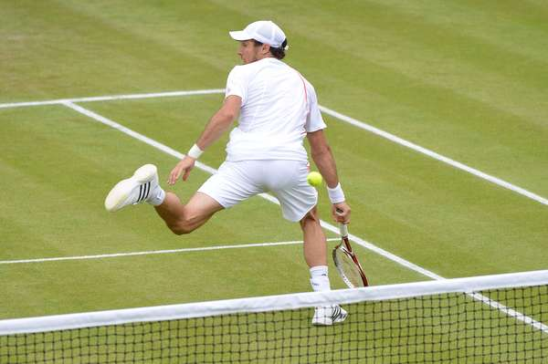

Aspectos técnicos
El tenis es un deporte que requiere dominar técnicas como son: golpes, efectos, posiciones corporales y desplazamientos, además de tener gran resistencia para jugar partidos de larga duración.
Saque
El saque es el golpe más importante del tenis ya que este es el comienzo al punto, su correcta aplicación puede permitir a la persona que saca quedar en una posición de ventaja tras la devolución o bien lograr un saque ganador o ace (punto ganado sin que el rival impacte la pelota), o que tras el impacto del adversario la pelota no llegue a pasar la red o ésta se vaya fuera de los límites de los flejes (en cuyo caso no se denomina ace, sino punto de saque). Al tener buen saque, el tenista golpea la pelota sin que esta toque suelo, dificultando la respuesta del adversario. Los jugadores, para concentrarse a la hora de sacar, suelen picar la pelota. El movimiento se realiza arrojando la pelota hacia arriba y levemente hacia adelante con el brazo inhábil mientras el brazo hábil realiza un movimiento en dos fases, primero hacia la espalda, colocando la mano a la altura de la nuca, y tras una leve pausa, hacia arriba, para impactar la pelota en el punto más alto de alcance del brazo y terminar el golpe abajo, con la raqueta debajo del brazo inhábil.

Drive ( derecha )
El drive o derecha es el golpe básico. Consiste en golpear la pelota después del pique de forma directa, del mismo lado del brazo hábil del jugador. Para la mayoría de los jugadores es el arma fundamental para ganar un punto y el de mayor control.
Para realizar un correcto drive se debe estar perfilado a la pelota; en el caso de un diestro el golpe empieza en el lado derecho del cuerpo, continuando a través del mismo hasta impactar la pelota y terminando en la parte izquierda del cuerpo.
El impacto debe darse en la zona comprendida entre hombro y cadera, y el movimiento se realiza de abajo hacia arriba. Una vez que la pelota impacta en la raqueta el tenista pasa el brazo derecho hacia adelante cerrando el golpe. En el momento que llega la pelota en altura el tenista toma la decisión de dar un golpe potente o cruzarla a algún lado.
Es el golpe más fácil de aprender, al ser también el más natural.

Revés
El revés es el golpe al lado opuesto al drive. A pesar de ser un golpe de mecánica natural suele ser uno de los que más cuesta llegar a dominar cuando se empieza en el tenis. Es muy importante la posición del cuerpo, debe ser colocado de perfil utilizándose como técnica para ello bajar el hombro para apuntarlo en dirección a la red mientras el brazo derecho en los diestros e izquierdo en los zurdos, pasa sin ser flexionado por debajo del mentón, para ubicarse atrás antes de retornar para impactar la pelota, siempre delante del cuerpo. Es importante, al igual que el drive, que el peso del cuerpo se traslade de atrás hacia adelante en el momento de impactar la pelota.

Volea
La volea es el golpe que se realiza antes que la pelota pique. Es ejecutado normalmente cerca de la red para definir un punto. Debido a la mayor cercanía del jugador al contrincante, es un golpe que requiere ser realizado con gran velocidad y reflejo. La raqueta debe encontrarse en todo momento al frente y alto. El golpe se realiza llevando adelante el pie opuesto al lado donde se va a impactar la pelota, simultáneamente con el perfilado del cuerpo, de modo que la raqueta pueda hacer un breve movimiento hacia atrás para impactar la pelota adelante y de arriba hacia abajo, aprovechando la fuerza que la propia pelota trae, en lo posible sin aplicar energía extra y sin flexionar la muñeca.

Dejada
La dejada o drop shot (del inglés drop, “dejar caer”) es un golpe en el que se le resta potencia a la pelota con la intención de que caiga lo más cerca posible de la red del lado contrario. Se realiza habitualmente de drive, aunque es posible hacerlo también de revés. La preparación del golpe es similar a la preparación del drive (o revés), debiendo realizarse en el último momento para sorprender al contrincante, que espera un tiro al fondo. Al momento del impacto en lugar de realizarse el swing amplio, la raqueta debe caer de manera perpendicular a la pelota, con un giro de muñeca, para producir el efecto de goteo que hará a la pelota caer y pasar bien la red.
Resulta vital que el golpe sea bajo y corto, para así evitar que el contrincante llegue a la pelota antes del segundo pique, porque de lo contrario le quedará un fácil golpe cerca de la red. Simultáneamente el jugador puede acercarse a la red para prevenir una contra dejada.

Contra dejada
La contra dejada suele ser la respuesta adecuada a una dejada, a la que el jugador llega poco antes del segundo pique. Como habitualmente la pelota se encuentra muy baja y cerca de la red, no es posible recurrir a un golpe potente, por lo cual, el jugador solo tiene la opción de realizar un golpe suave sobre el fondo, es decir, una nueva dejada de respuesta, esta vez realizada desde cerca de la red.

Remate o smash
El smash o remate es un golpe que es realizado sobre la cabeza con un movimiento similar al saque. Generalmente se puede golpear con gran fuerza de manera relativamente segura y es a menudo un tiro definitorio. La mayoría son realizados cerca de la red o a mitad de la pista antes del pique de la pelota. Suele ser la respuesta a un globo realizado por el oponente que no tuvo la suficiente altura. También puede realizarse desde la línea de base tras el pique, aunque es menos definitorio. Es un golpe alto, realizado de arriba hacia abajo, antes de que la pelota pique, o después de que lo haga, pero únicamente en caso de que este lleve una parábola más vertical que horizontal. Para que sea efectivo es indispensable que sea muy potente y que no dé oportunidad de respuesta al contrario, ya que se trata siempre de un golpe de definición. Se realiza cuando la pelota viene muy alta, a la altura del brazo extendido del jugador.

Imagen tomada de Tenis de Campo
Gran willy
Es un golpe inusual, habitualmente en situación desesperada, cuando la pelota ha pasado al jugador, que consiste en impactar entre las piernas de espalda a la red.

El "back swing" es el movimiento de "echarnos la raqueta atrás" para tomar impulso para golpear la pelota . En el tenis clásico recomendaban hacer un swing "largo" es decir describir un círculo muy amplio y con el brazo casi estirado volteando la raqueta hacia arriba y hacia atrás
Su ejecución consiste en impactar hacia arriba la pelota (a diferencia de las demás ejecuciones que se hacen hacia adelante), con esto se logra pasar a un jugador que está parado en la zona de la volea o bien hacer un juego defensivo de fondo.